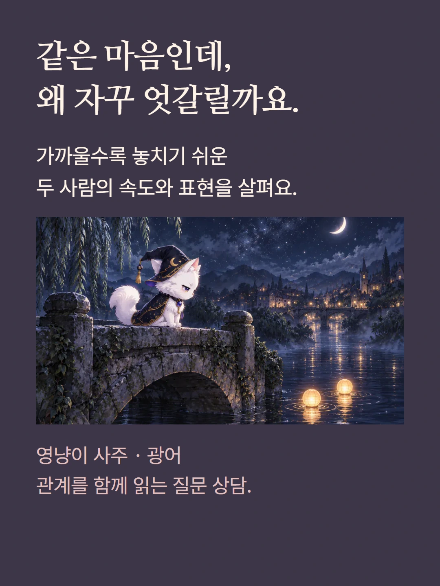
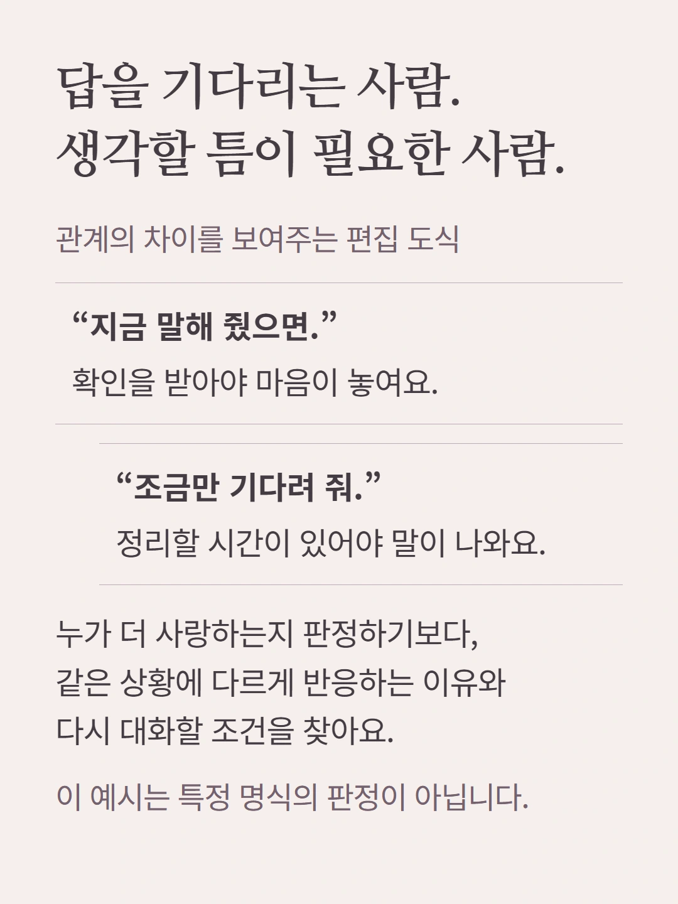
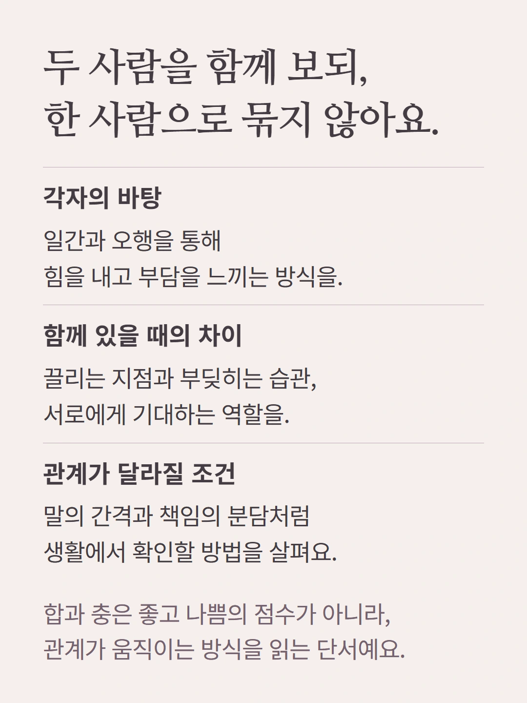
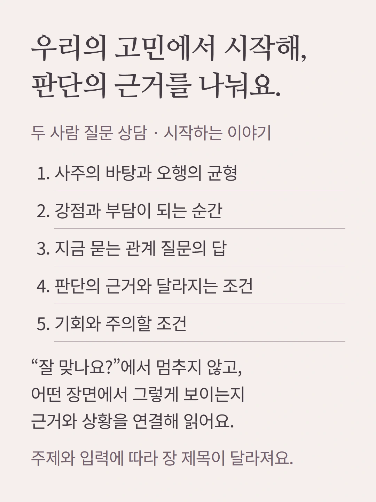
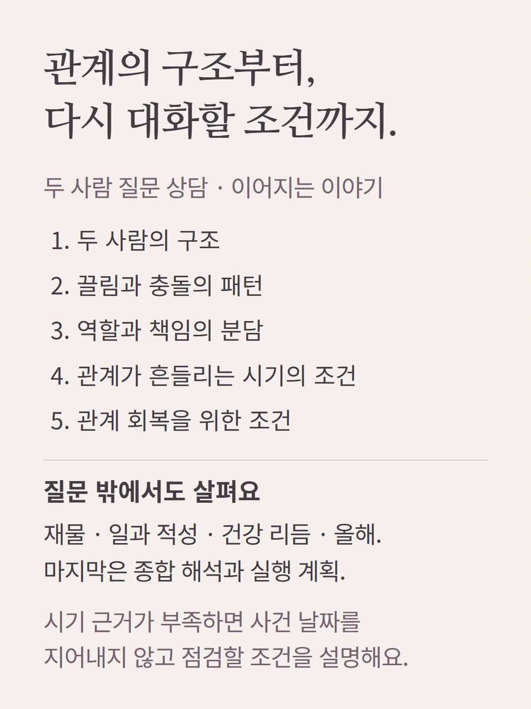
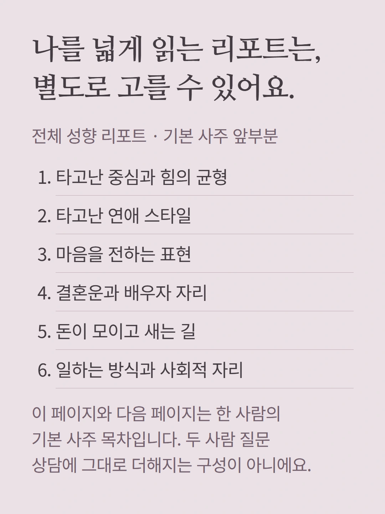
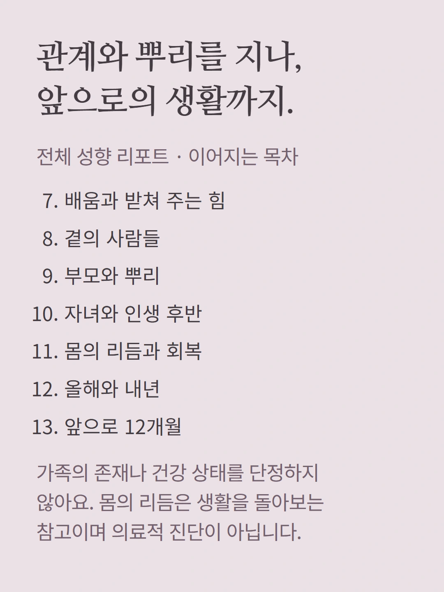
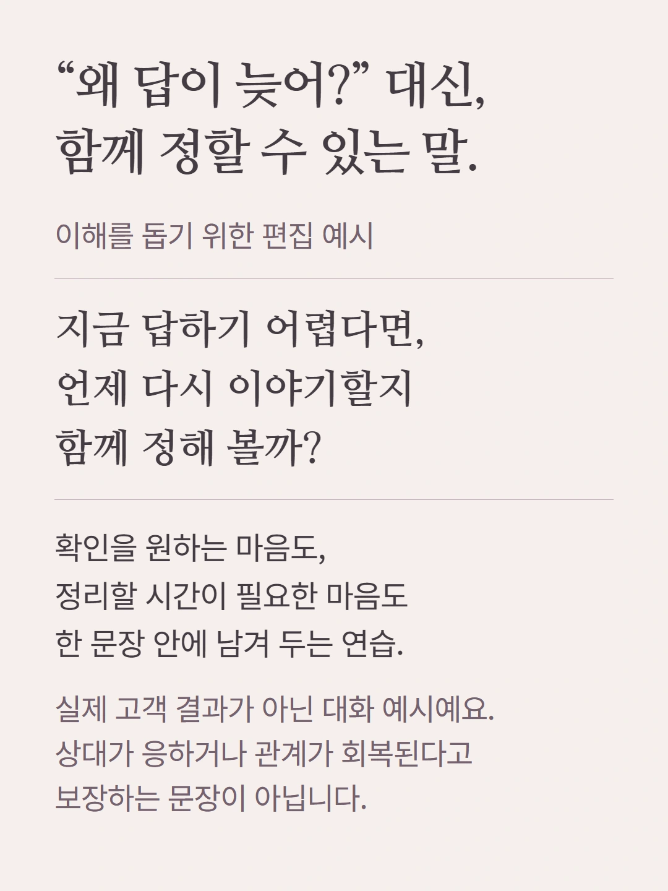
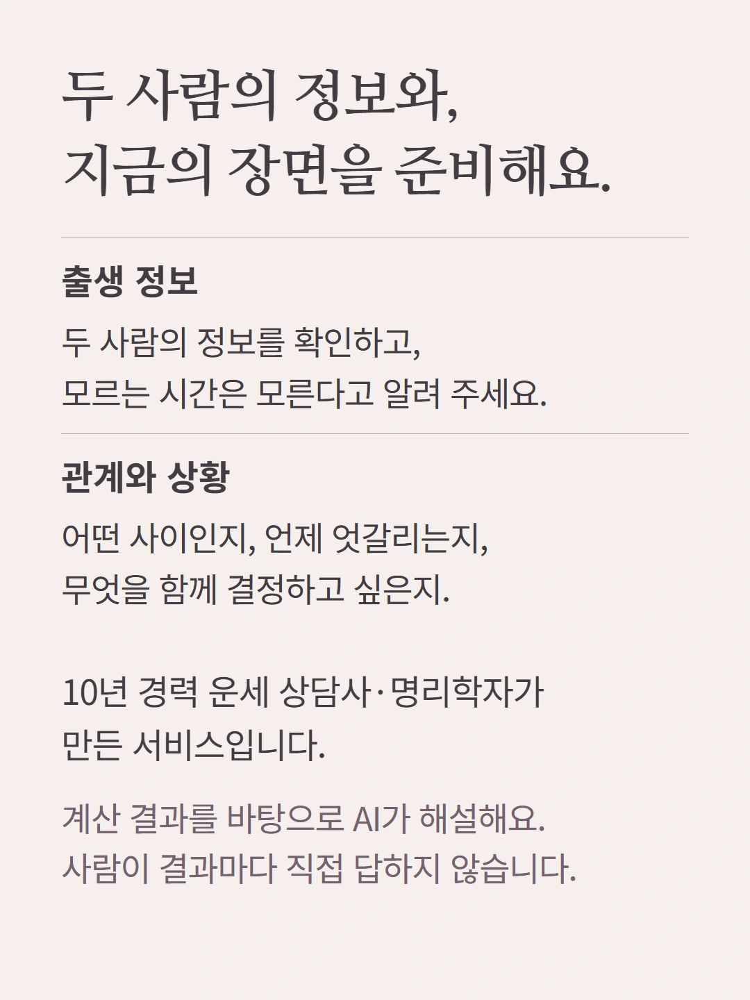
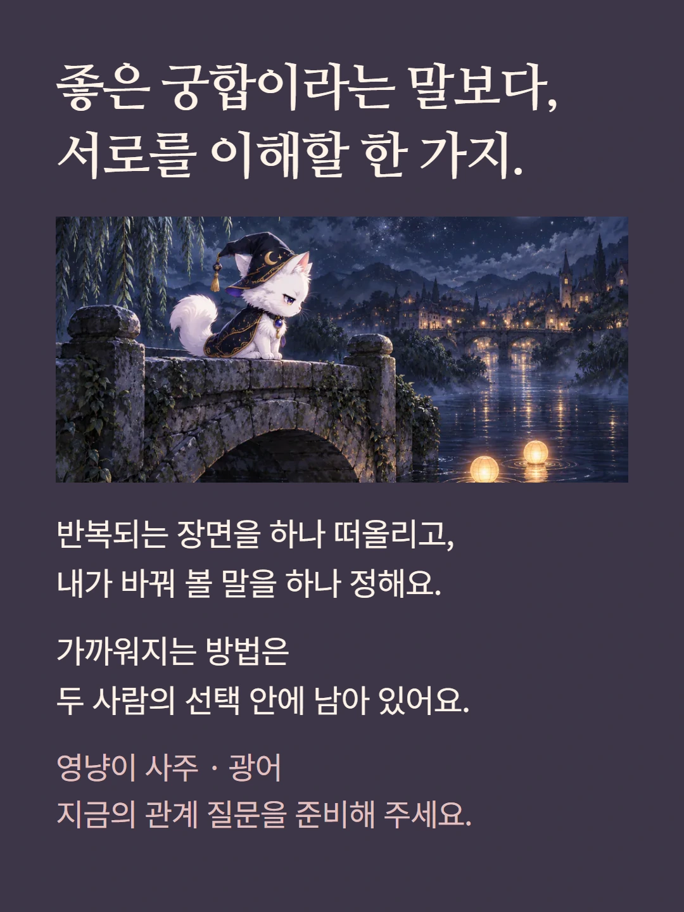

로컬 편집 미리보기. 실제 화면은 mobile.json 및 legacy/question 캡처를 참조하세요.










관계 대화와 도식은 이해를 돕기 위한 편집 예시이며 실제 고객 결과가 아닙니다. 두 사람의 질문 상담과 한 사람의 전체 성향 리포트는 서로 다른 구성입니다. 상대의 속마음이나 관계의 결말을 확정하지 않습니다. 가격과 추가 질문 조건은 기존 상담 준비 화면에서 확인해 주세요.